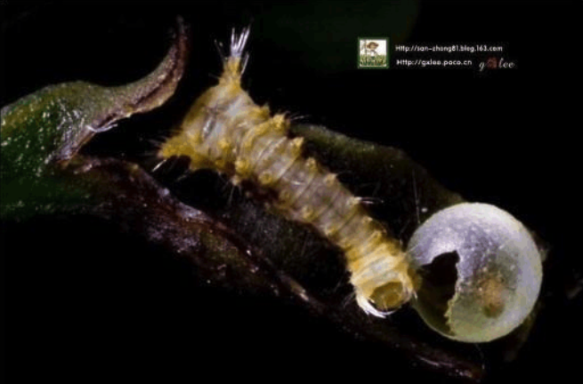
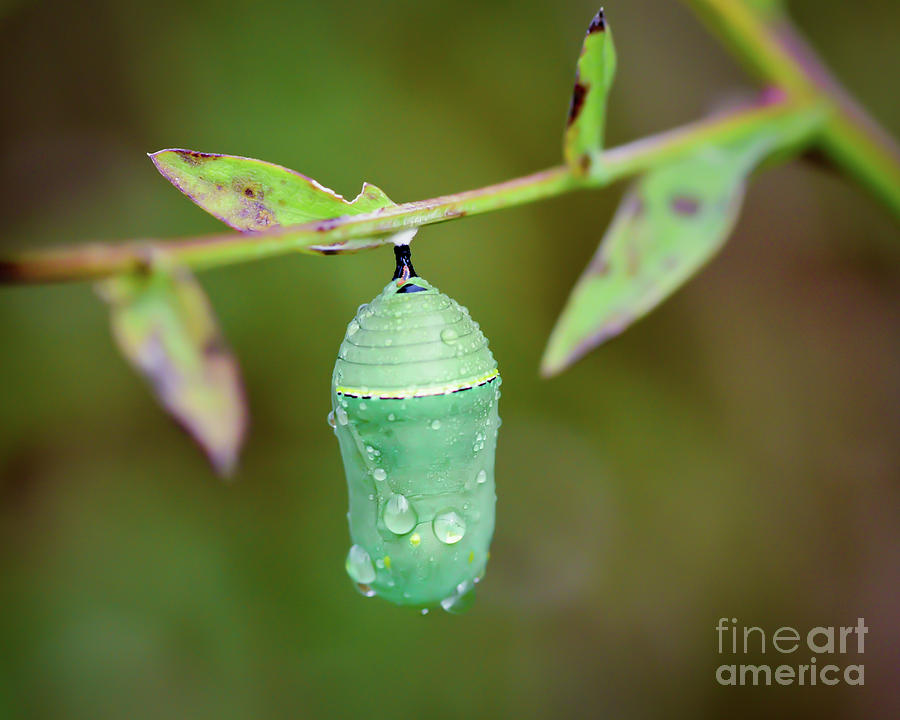
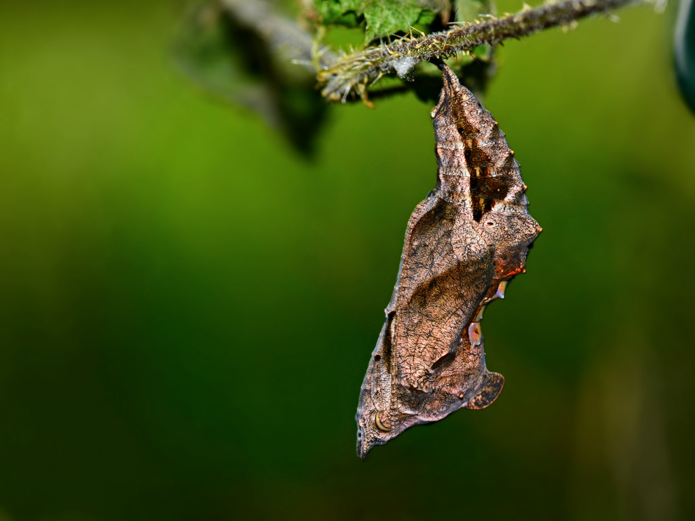
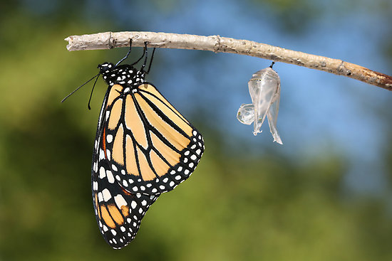

蝴蝶的生命周期
蝴蝶
蝶，通称为“蝴蝶，全世界大约有 14000 多种，大部分分布在美洲，尤其在亚马逊河流域品种最多。中国有 1200 种。
蝴蝶一般色彩鲜艳，身上有好多条纹，色彩较丰富，翅膀和身体有各种花斑，最大的蝴蝶展翅可达28～30厘米左右，最小的只有 0.7 厘米左右。 体形大多在5~10cm之间，身体分为头、胸、腹；两对翅；三对足。在头部有一对锤状的触角，触角端部加粗，翅宽大，停歇时翅竖立于背上。

蝴蝶和蛾类的主要区别是蝴蝶头部有一对棒状或锤状触角，蛾的触角形状多样。

蝶与飞蛾的区别之处
蝶类特点
- （1）多数蝶类翅膀正面的鳞粉色泽亮丽，翅表面不被毛绒。少数蛱蝶科的蝶类后翅根部被有较明显的毛绒。
- （2）多数蝶类有顶端膨大的棒状触角。
- （3）蝶类四翅合拢竖立于背上休息的方式。
- （4）蝶类躯干上被毛稀疏（需与蛾类比较）。
- （5）蝶类腹面可见的后翅根部呈弧形（贴接式），无翅缰。有助于飞行的速度提升，是因为蝶类在白天活动普遍飞行速度快于蛾类。
- （6）蝶的蛹赤裸，无茧。
- （7）蝴蝶的活动时间严格定义在白天。
飞蛾类特点

|

|
- （1）蛾子不分昼夜地飞，大多数都是棕色或者黑色，很少有几种颜色与蝴蝶一样鲜艳。
- （2）多数蛾类触角顶端呈针尖样弯曲或整个触角呈羽毛状，少数蛾类（天蛾科、斑蛾科）由于白天活动所以触角与蝶类相似。
- （3）蛾类多数都是将四翅平铺休息。
- （4）蛾类躯干部被毛一般都很浓密，就像天蛾科的蛾类飞行期间很容易与蜂鸟混为一谈。
- （5）大多数蛾类的腹面后翅根部是平滑的，弧度很小，这跟蛾类在夜间飞行速度慢有关。
- （6）蛾的蛹有茧。例如，蚕丝就是从蚕蛾的茧提取的。
蝶与飞蛾相同之处
- 成虫体表及翅上被有鳞片，口器虹吸式。
- 幼虫大都是植食性，颇多为农业害虫。
- 完全变态。
- 都有三对足。
物种天敌
蝴蝶的天敌主要有：蚂蚁、甲虫、鸟、蝇、蜥蜴、蛙、蟾蜍、螳螂、蜘蛛、黄蜂、寄生蜂等。
翅膀用途
它们多彩的翅膀不仅仅是为了让人们大饱眼福。五彩缤纷的颜色是用来隐藏、伪装和吸引配偶的。
- 隐身术

- 豹纹诱惑
繁殖过程
蝴蝶是完全变态的昆虫，即一生会经过四个阶段：卵、幼虫、蛹、成虫。

|
|||

|

|
||
- 卵 蝴蝶的卵一般为圆形或椭圆形，表面有蜡质壳，防止水分蒸发，一端有细孔，是精子进入的通路。不同品种的蝴蝶，其卵的大小差别很大。蝴蝶一般将卵产于幼虫喜食的植物叶面上，为幼虫准备好食物。
蝴蝶卵的形状因种类不同而各异。
- 幼虫
幼虫孵化出后，主要就是进食，初出卵壳的幼虫先吃掉它的卵壳，然后会吃掉大量植物叶子，幼虫的形状多样，多为肉虫，少数为毛虫。蝴蝶危害农业主要在幼虫阶段。随着幼虫生长，一般要经过几次蜕皮。
从卵中孵化到第一次蜕皮叫一龄。
在一次与二次蜕皮之间叫二龄。
蝴蝶幼虫一般蜕皮四次，即经过五个龄期。

|
 |
- 蛹 幼虫成熟后要变成蛹，幼虫一般在植物叶子背面隐蔽的地方，用几条丝将自己固定住，之后直接化蛹，无茧。

|
|
 |
|  |
-

-
成虫
蛹成熟后，从蛹中破壳钻出，但需要一定的时间使翅膀干燥变硬，这时的蝴蝶无法躲避天敌，属于危险期。翅膀舒展开后，蝴蝶就可以飞翔了，蝴蝶的前后翅不同步扇动，因此蝴蝶飞翔时波动很大，姿势优美，所谓“翩翩起舞”，来源于蝴蝶的飞翔。 一般蝴蝶成虫交配产卵后就在冬季到来之前死亡。
|
|
|
|  |
- 成虫 - 羽化过程 破壳而出，拖着它又小又萌的翅膀在到处爬行，寻找适合羽化的地方，让自己倒挂起来，重力会在伸展翅膀时帮点小忙。然后它会有节奏的压缩自己鼓胀的腹部，让体液通过翅脉充入翅膀，从而展开柔软的翅膀。这个过程需时不同种类长短不一。常见的黄钩蛱蝶展开翅膀仅需15秒钟，也就是一瞬间的事；冰清绢蝶完整的展开翅膀，花了整整30分钟的时间，整个过程甚是艰难。